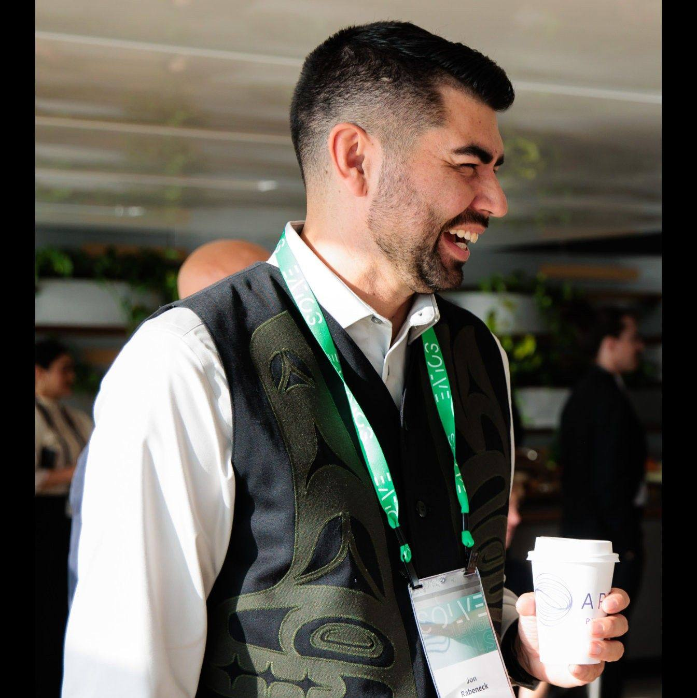
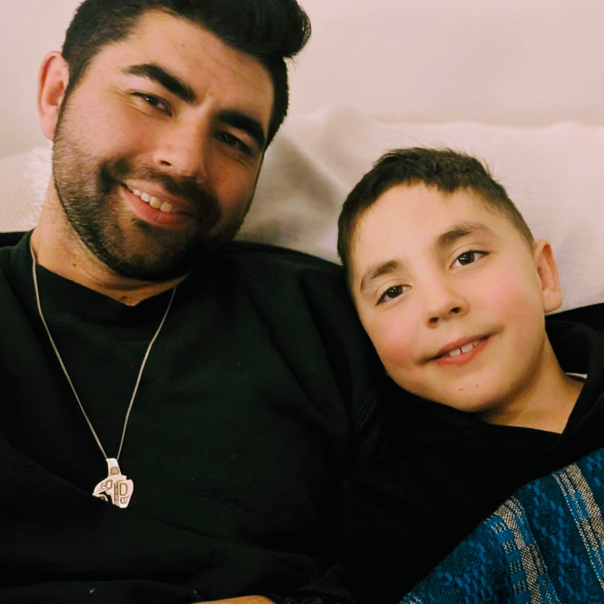

A home for your language.
Screen-free language tools for early learners. You bring the approved recordings, and I load them into the bear and flashcard reader so children can hear their language at home, in classrooms, and in language nests.
Each bear and reader can be loaded with your own approved voices, words, phrases, and songs.

Founder
Jon Rabeneck
Designed For
Early Learning
Recordings
Approved by You
Setup
No Apps Needed
Playback
Fully Offline
Bringing language back into everyday play
Too often, First Nations kids walk down toy aisles and do not see themselves, hear their languages, or feel reflected in what is treated as normal. I started Indigenize Toys because I wanted to help change that in a practical way.
Books and flashcards matter, but children also need to hear language spoken out loud in voices they know. I use simple audio technology to help turn approved community recordings into toys and tools that bring language back into homes, classrooms, and language nests.


The Audio Bear
The Audio Bear brings language into everyday routines in a way that feels familiar, simple, and screen-free. It can be used at bedtime, in reading corners, during quiet time, or anywhere a child would naturally reach for a favourite toy.
Each bear includes 7 touch points, and each touch point can hold multiple recordings. That means one bear can carry words, phrases, songs, or voices that matter to your family or community.
| Touch points | Mapped to hands, feet, ears, and tummy |
| Recordings | Loaded with your approved recordings |
| Use | Homes, classrooms, and language nests |
| Power | 3 AAA batteries (replaceable) |
Offline Audio Flashcard Reader
The reader is simple by design. Insert a card and it plays the matching word or phrase in your community’s voice. Children can listen, repeat, and build familiarity through everyday use, without needing a screen.
It works well in classrooms, language nests, and homes, especially for programs that want something practical, repeatable, and easy for children and educators to use.
| Use | Insert a card to hear the recording |
| Cards | Durable laminated decks, with custom options available |
| Recordings | Matched to each deck and loaded offline |
| Best for | Classrooms, language nests, and home use |

This work started at home
I am Coast Salish from Snuneymuxw First Nation on my mother’s side, and English and Irish on my father’s side. The idea for Indigenize Toys started at home. As a single dad, I spend a lot of time teaching my son Nick through everyday life, out on the land, on the water, and in the world around us. But when I looked at the toys in his playroom, I saw that everything spoke English.
That stayed with me. I wanted something better. I wanted kids to hear their language, hear familiar voices, and feel that their culture belongs in everyday play.
I have a professional background in Indigenous governance and improving First Nations health outcomes, and I have always been drawn to building things, understanding systems, and working with technology. Indigenize Toys brings those parts of me together: culture, language, design, and hands-on problem solving.
My goal is simple. I want to help communities put their own voices into the hands of their children, and I want Indigenous kids to grow up knowing that language, culture, and STEM belong together.

Your language. Your voices. Your process.
I do not source language. I help turn your approved recordings into tools children can use at home, in classrooms, and in language nests.
Start with a call
We talk through what you need and how you want it used.
Record
Your speakers record, and your community decides what is approved.
Prepare
I load the recordings offline and prepare the bears or readers.
Ready to use
Everything arrives ready to use, with no apps or setup required.
One bear. One reader. A simple way to start.
If you are thinking about a pilot, this is a simple way to start. It gives you something real to hold, test, and share before committing to a larger rollout.
What you get
- 1 Audio Bear
- 1 Flashcard Reader
- 1 starter deck (demo or custom)
Best for
- Language nests and early years programs
- Immersion classrooms
- Communities exploring next steps